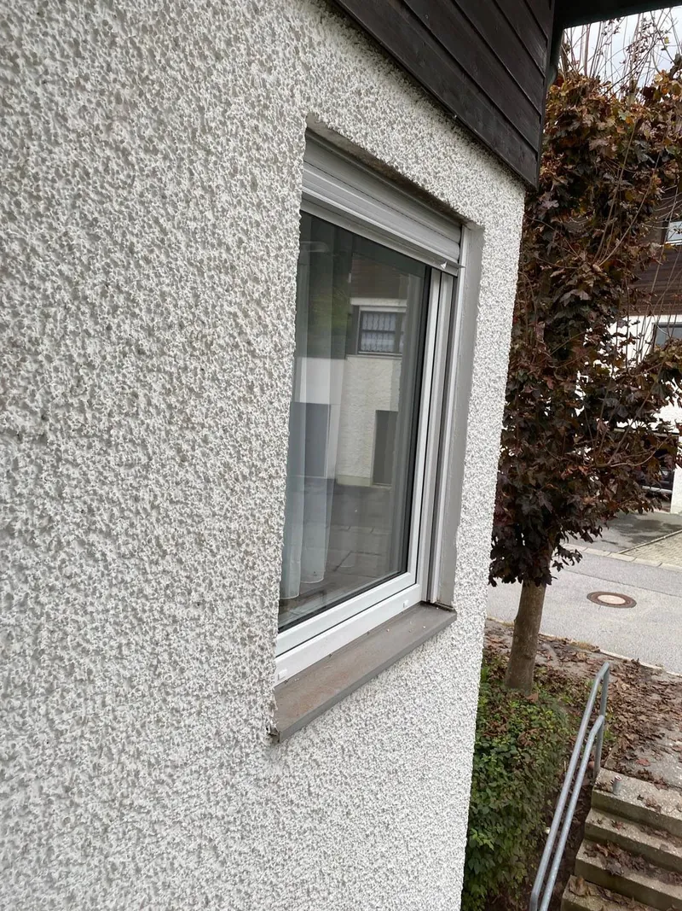
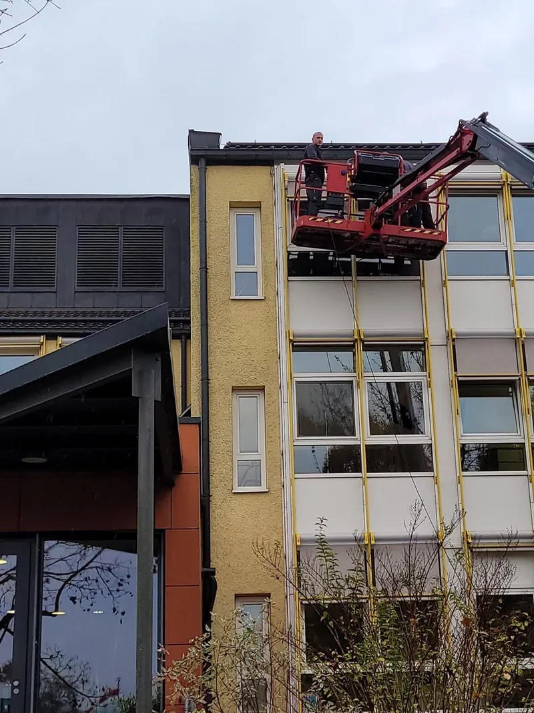

Uw-Wert: Wärmeverlust
Wie viel Wärme durch das ganze Fenster entweicht, Rahmen inklusive. Je kleiner, desto besser. Neubau heute: 0,8 bis 1,0. Ein Fenster von 1985 liegt oft bei 2,8 und mehr.
Fenster
Kunststoff, Holz, Aluminium. Zweifach oder dreifach verglast, mit Schallschutz oder Einbruchhemmung. Wir messen auf, liefern, montieren nach RAL und nehmen die alten Fenster mit.
Material
Es gibt kein bestes Material – nur ein passendes. Wir schauen uns Ihre Fassade, die Himmelsrichtung, das Budget und Ihre Pflegebereitschaft an und sagen Ihnen ehrlich, was wir einbauen würden.

Verglasung
Wer sie kennt, kann Angebote wirklich vergleichen. Wir schreiben sie deshalb in jedes Angebot.
Wie viel Wärme durch das ganze Fenster entweicht, Rahmen inklusive. Je kleiner, desto besser. Neubau heute: 0,8 bis 1,0. Ein Fenster von 1985 liegt oft bei 2,8 und mehr.
Wie viele Dezibel das Fenster schluckt. Standard-Dreifachglas schafft rund 35 dB, Schallschutzklasse 4 rund 42 dB. Zehn Dezibel weniger empfinden wir als halb so laut.
RC2 ist der sinnvolle Standard für Erdgeschoss und leicht erreichbare Fenster: Pilzkopfverriegelung, Sicherheitsglas, abschließbarer Griff. Hält einen Gelegenheitstäter auf.
| Aufbau | Uw ungefähr | Rw ungefähr | Passt wofür |
|---|---|---|---|
| Zweifachglas, Standard | 1,3 W/(m²K) | 32–35 dB | Nebenräume, Garage, Budget |
| Dreifachglas, Standard | 0,9–1,0 | 34–36 dB | der heutige Regelfall im Wohnhaus |
| Dreifachglas mit Schallschutz | 0,9–1,0 | 40–45 dB | Schlafzimmer an der Straße, Bahnlinie |
| Dreifachglas mit RC2 | 0,9–1,0 | 35–42 dB | Erdgeschoss, Terrassentüren |
Richtwerte für gängige Systeme. Die verbindlichen Kennwerte stehen im Datenblatt des jeweiligen Herstellers und in Ihrem Angebot.

Montage
Die Hälfte der Wärmeverluste eines neuen Fensters entsteht nicht im Glas, sondern am Anschluss zur Wand. Wir bauen nach dem Prinzip der RAL-Montage ein.
Auch das gehört dazu
Alte Elemente raus, abtransportiert, fachgerecht entsorgt. Als eigene Position im Angebot.
Alu, Naturstein oder Kunststein – passend zur Laibung und mit sauberem Anschluss.
Aufsatz- oder Vorbaukasten, Gurt oder Motor. Mehr dazu
Verputzen, Trockenbauanschluss, Anstrich – damit nach der Montage nichts offen bleibt.
Maßgefertigt, direkt beim Aufmaß mitgemessen. Später nachrüsten kostet mehr.
Beschlag klemmt, Scheibe blind, Dichtung porös: oft reicht ein Termin statt eines neuen Fensters.
Fenster in Ihrer Nähe
Unsere Werkstatt steht in Bayerbach im Landkreis Rottal-Inn. Von hier aus fahren wir täglich in die Orte der Umgebung: Bad Birnbach, Pfarrkirchen, Eggenfelden, Simbach am Inn, Rotthalmünster, Bad Griesbach, Tann, Triftern und bis nach Passau. Weil wir nur zu zweit sind, planen wir Termine ehrlich: Wenn wir einen Auftrag nicht in Ihrem Zeitrahmen schaffen, sagen wir das am Telefon und nicht erst nach der Unterschrift.
Sie sind außerhalb dieses Gebiets? Fragen Sie trotzdem an. Bei größeren Aufträgen fahren wir auch weiter.
Der nächste Schritt
Wir kommen vorbei, messen jedes Element einzeln auf und zeigen Ihnen zwei bis drei Varianten.